For our assignment, we will be 3D machining the mold for our molding and casting process.
I first started by modelling the object that I wanted to cast in Fusion 360, I will be making a candle holder:
Before modelling, I used a vernier caliper to measure the diameter of the candle.
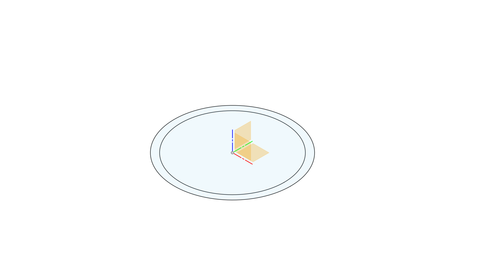I sketched two circles, the inner circle being the diameter of the candle I want to fit inside the candle holder.
The outer circle has a diameter of the inner circle + 2 * 2.5mm which is my desired wall thickness.
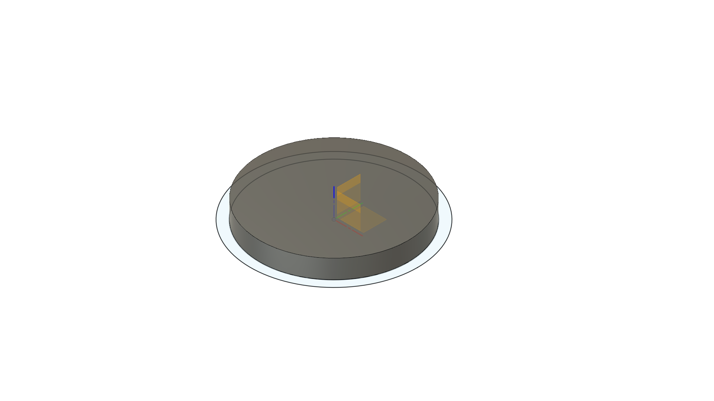I then extruded the inner circle which will where my candle will be sitting on
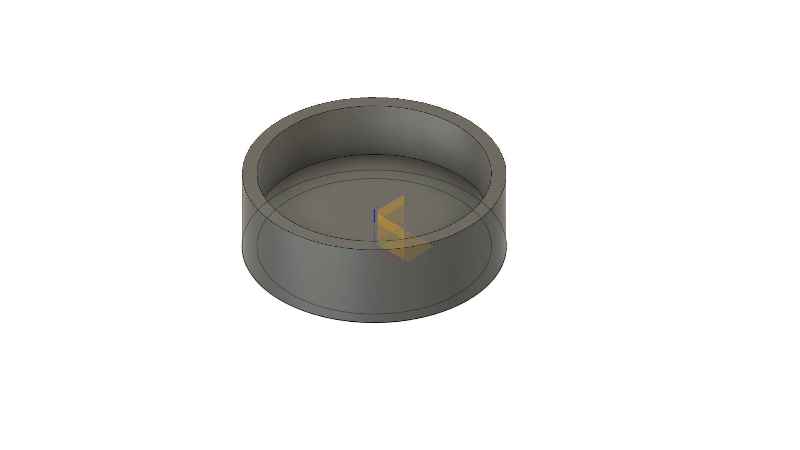I followed this by extruding the area in between the two sketched circles to form the wall encompassing my candle
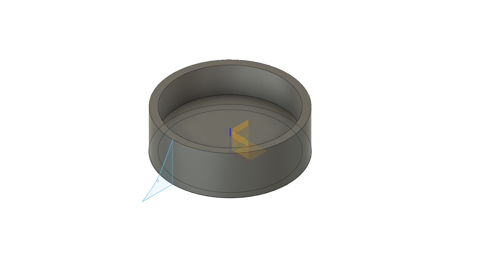Next, I sketched a simple curving profile
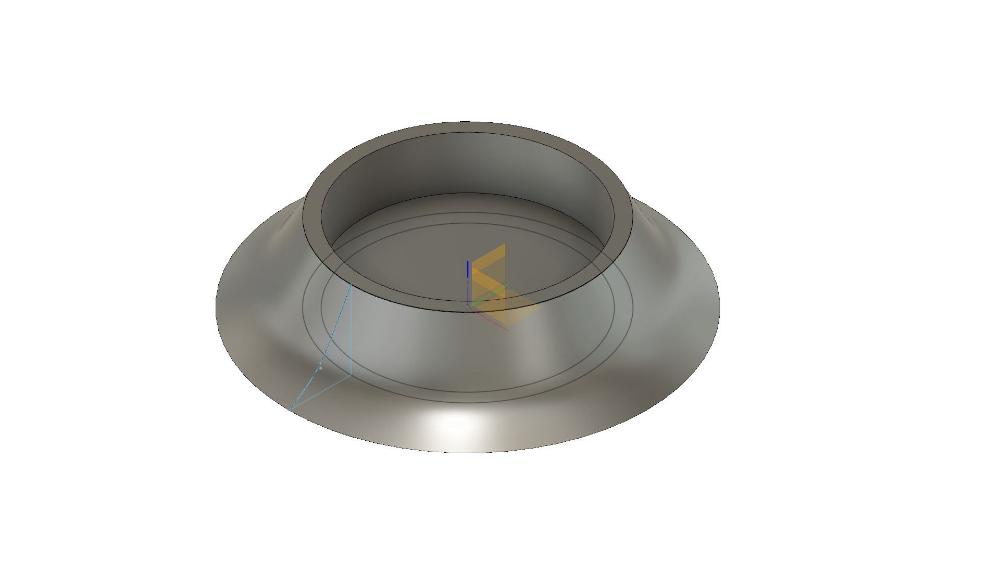I then used the revolve tool, using the sketch as the profile and the centre of the candle holder as the axis for the profile to be revolved around.
Now that I have modelled my candle holder, I'll model the mold. I'll start by sketching a square for a base
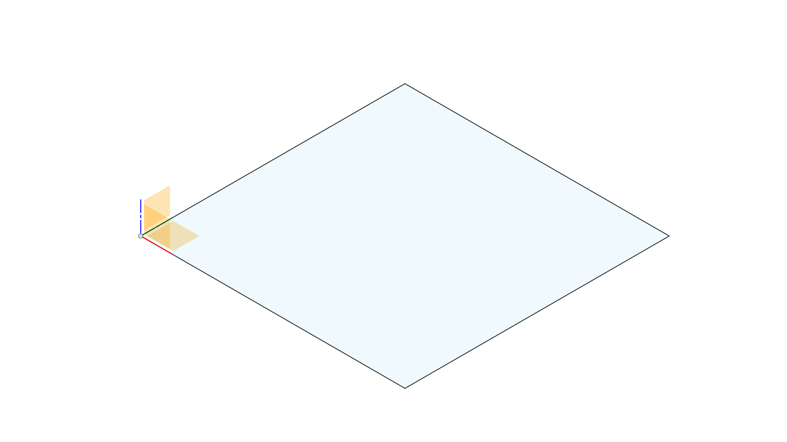I then extruded it by 5mm which will be the thickness of the my base
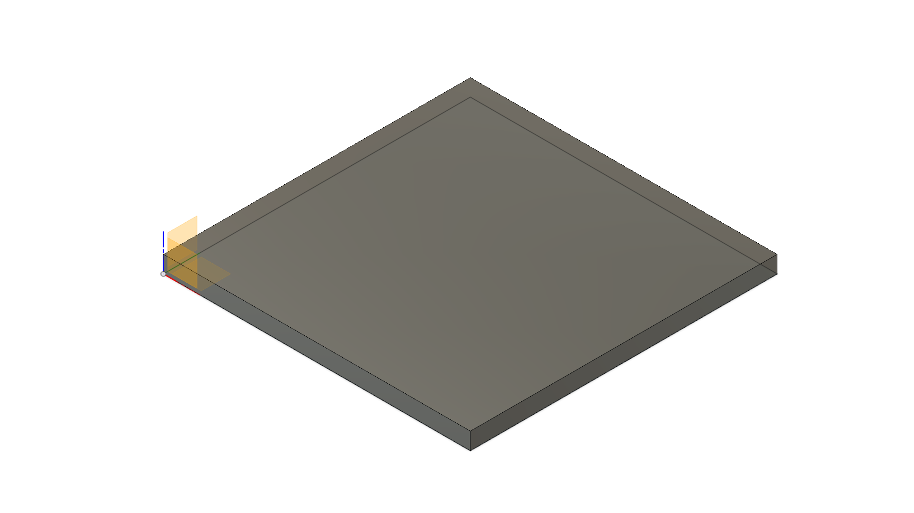I then inserted my previously made object as a component, aligning the two centres using the point to point move tool
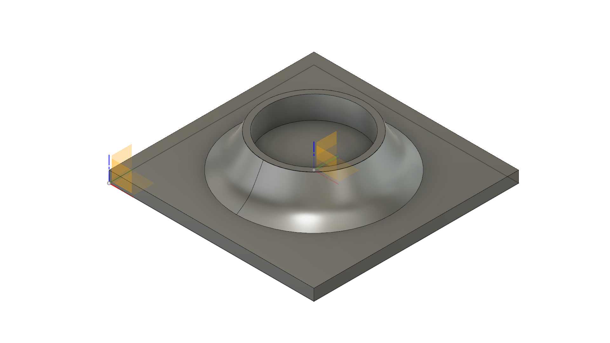Next, I sketched the walls of the mold on the X axis, angling their insides, this will make removal of the mold later easier.
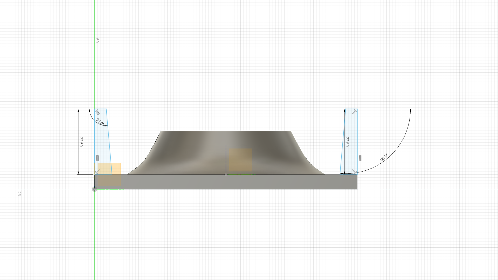I proceeded to do the same for the Y axis
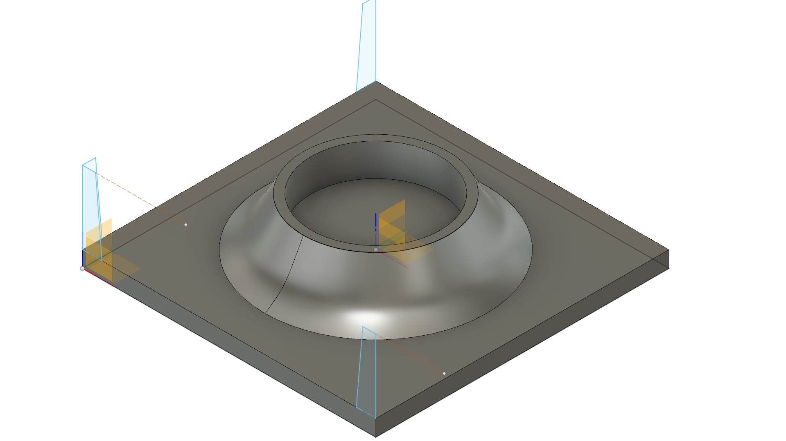Following that I extruded all 4 profiles to create the surrounding walls.
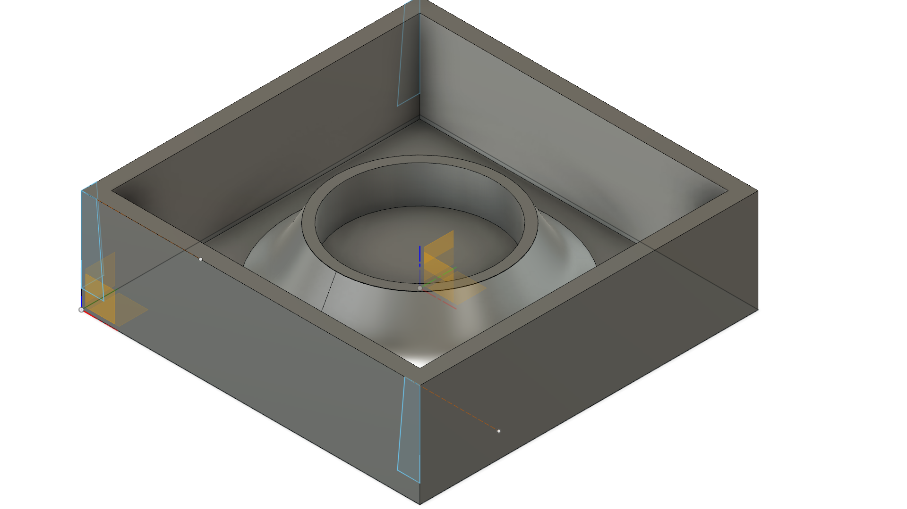Now that I have modelled my mold, I can now generate the toolpath for milling it.
We'll head to the manufacturing tab of Fusion 360, click on the design box and it'll open a drop down menu, click on the word manufacture to select the manufacturing tab.
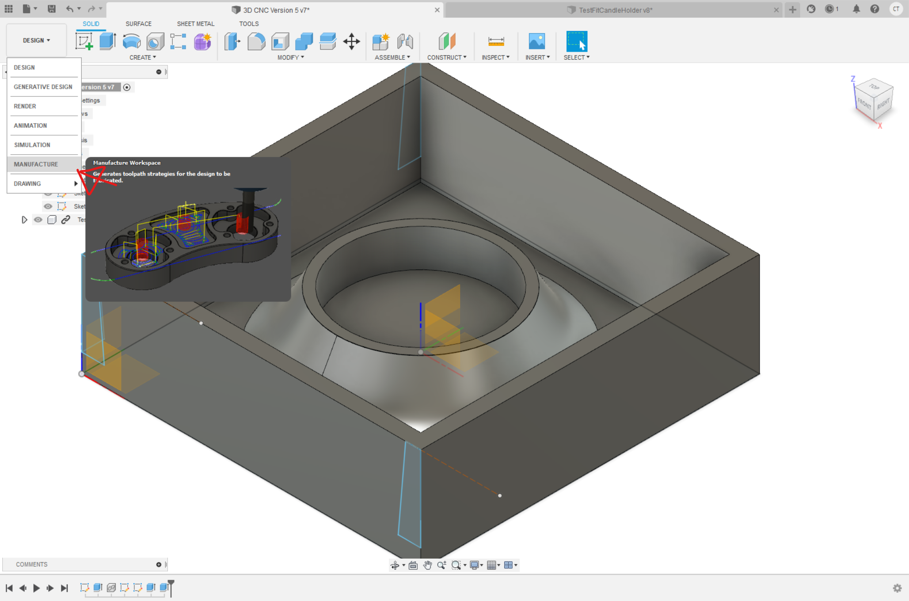We will also need to